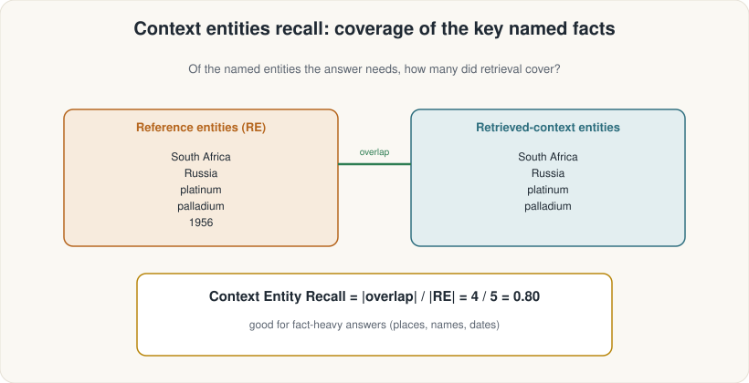
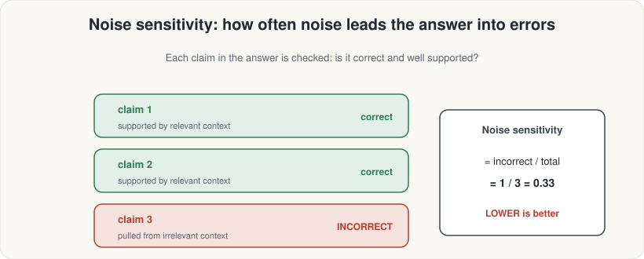

ASDRP · Agentic RAG Track · Module 08
Score whether retrieved passages capture key named entities — and whether irrelevant passages mislead the generator.
What we'll cover
ContextEntityRecallNoiseSensitivityevaluate() runTrack 1 · Context Entity Recall
Precision/Recall (Module 07) score whole passages. Entity Recall zooms in: does the retrieved context contain the specific named things the reference answer mentions?

Track 1 · Context Entity Recall
ContextEntityRecallfrom ragas.metrics import ContextEntityRecall
from ragas import evaluate
# metrics list contains ONLY the two new metrics for this module
metrics = [ContextEntityRecall()]
results = evaluate(
dataset=eval_dataset, # EvaluationDataset with 8 golden samples
metrics=metrics,
llm=judge_llm, # LLM judge extracts entities from reference
embeddings=ragas_embeddings,
)
print(results.to_pandas()[["user_input", "context_entity_recall"]])import asyncio
score = asyncio.run(
ContextEntityRecall(llm=judge_llm).single_turn_ascore(samples[3])
)
print(f"Entity recall for Q4: {score:.3f}")Track 2 · Noise Sensitivity
Even a precise retriever can return a few irrelevant passages. NoiseSensitivity measures how often the generator makes incorrect claims that trace back to those noisy passages.

Track 2 · Noise Sensitivity
NoiseSensitivity = errors_from_noise / total_statements_in_answerk (fewer retrieved chunks) or add reranking (Module 10) to filter noise before the generator sees it.
Track 2 · Noise Sensitivity
NoiseSensitivityfrom ragas.metrics import NoiseSensitivity
# NoiseSensitivity: LOWER is better — it measures how often the
# generator is misled by irrelevant retrieved passages.
metrics = [NoiseSensitivity()]
results = evaluate(
dataset=eval_dataset,
metrics=metrics,
llm=judge_llm,
embeddings=ragas_embeddings,
)
df = results.to_pandas()
print(df[["user_input", "noise_sensitivity_relevant"]])
# ⚠ A score of 0.18 is GOOD. A score of 0.80 is BAD.noise_sensitivity_relevant. When you sort the table, sort ascending to put the best-performing questions at the top.
Track 3 · Evaluate & Interpret
from ragas.metrics import ContextEntityRecall, NoiseSensitivity
from ragas import evaluate
metrics = [
ContextEntityRecall(),
NoiseSensitivity(), # LOWER is better
]
results = evaluate(
dataset=eval_dataset,
metrics=metrics,
llm=judge_llm,
embeddings=ragas_embeddings,
)
df = results.to_pandas()
print(df[["user_input",
"context_entity_recall",
"noise_sensitivity_relevant"]])Track 3 · Evaluate & Interpret
| Metric | Good score | Scale direction | What to fix when bad |
|---|---|---|---|
context_entity_recall |
High (→ 1.0) | ↑ Higher is better | Retriever missing entity-rich chunks; try larger k or better chunking |
noise_sensitivity_relevant |
Low (→ 0) | ↓ Lower is better ⚠ | Retriever returning noisy passages; reduce k or add reranking (Module 10) |
context_precision (M07) |
High (→ 1.0) | ↑ Higher is better | Too many irrelevant chunks returned |
context_recall (M07) |
High (→ 1.0) | ↑ Higher is better | Key information missing from retrieval |
Track 3 · Evaluate & Interpret
Together, all four metrics give a complete retriever health check:
Wrap-up
k or add reranking (Module 10)Run the notebook: 08_more_retriever_metrics.ipynb